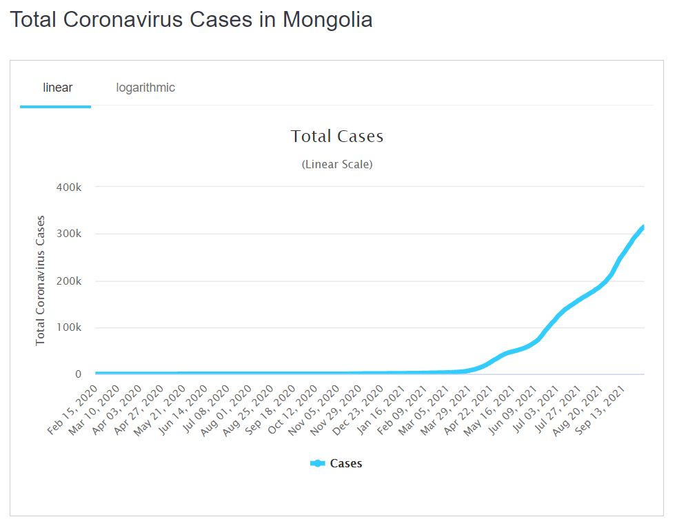
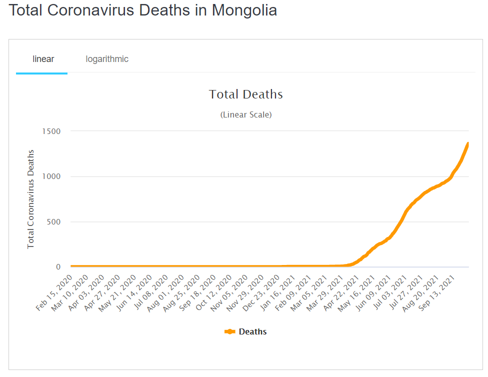

|
|
What Is Coronavirus?

Coronaviruses are a type of virus. There are many different kinds, and some cause disease. A coronavirus identified in 2019, SARS-CoV-2, has caused a pandemic of respiratory illness, called COVID-19.
As of now, researchers know that the coronavirus is spread through droplets and virus particles released into the air when an infected person breathes, talks, laughs, sings, coughs or sneezes. Larger droplets may fall to the ground in a few seconds, but tiny infectious particles can linger in the air and accumulate in indoor places, especially where many people are gathered and there is poor ventilation. This is why mask-wearing, hand hygiene and physical distancing are essential to preventing COVID-19.

The first case of COVID-19 was reported Dec. 1, 2019, and the cause was a then-new coronavirus later named SARS-CoV-2. SARS-CoV-2 may have originated in an animal and changed (mutated) so it could cause illness in humans. In the past, several infectious disease outbreaks have been traced to viruses originating in birds, pigs, bats and other animals that mutated to become dangerous to humans. Research continues, and more study may reveal how and why the coronavirus evolved to cause pandemic disease.
What is the incubation period for COVID-19?
Symptoms show up in people within two to 14 days of exposure to the virus. A person infected with the coronavirus is contagious to others for up to two days before symptoms appear, and they remain contagious to others for 10 to 20 days, depending upon their immune system and the severity of their illness.

What are symptoms of coronavirus?
Some people infected with the coronavirus have mild COVID-19 illness, and others have no symptoms at all. In some cases, however, COVID-19 can lead to respiratory failure, lasting lung and heart muscle damage, nervous system problems, kidney failure or death.

If you have a fever or any of the symptoms listed above, call your doctor or a health care provider and explain your symptoms over the phone before going to the doctor’s office, urgent care facility or emergency room. Here are suggestions if you feel sick and are concerned you might have COVID-19.
|
|
|